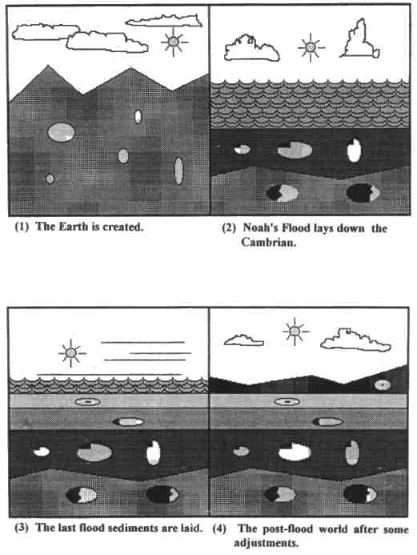

¿Qué tan buenos son esos argumentos de la Tierra joven?
Un examen detallado de la lista de argumentos de la Tierra joven del Dr. Hovind y otras afirmaciones
por Dave E. Matson| Copyright © 1994-2002 |

Anterior |
Contenido |
Siguiente |
Dr. Hovind (G1): La suposición de que la columna geológica es una base desde la cual calibrar las fechas de C-14 no es sabio.
G1. Con una vida media de solo 5730 años, la datación con carbono-14 no tiene nada que ver con fechar las edades geológicas. Ya sea por descuido o por ignorancia grosera, el Dr. Hovind está confundiendo el "reloj" de carbono-14 con otros "relojes" radiométricos.
La única cosa en el registro geológico que tiene algo que ver con calibrar la datación de carbono-14 es el carbón del Periodo Carbonífero. Al ser antiguo, el contenido de C-14 ha desaparecido hace mucho tiempo y eso lo hace útil para "cero" los instrumentos de laboratorio. Es solo uno de los trucos que se han utilizado para hacer el trabajo un poco más preciso.
Dr. Hovind (G2): La columna geológica entera se basa en la suposición de que la evolución es verdadera.
Otros enlaces:
|
G2. Si el Dr. Hovind tomara la molestia de leer algo más que publicaciones creacionistas, no haría una declaración tan escandalosa. Creo que ha confundido el uso de fósiles índice con la evolución. Un editor creacionista, que es más conciliador de lo que su desafortunada declaración sugiere, formuló el argumento de la siguiente manera:
Desafortunadamente, los geólogos datan las rocas según les indican los paleontólogos. Luego, los paleontólogos utilizan las fechas de los geólogos como evidencia para la edad de los fósiles. ¡Eso no es ciencia. Eso es solo un juego jugado por científicos deshonestos!
Ese pasaje podría haber salido de uno de los libros de Henry Morris, excepto que Morris suele evitar la difamación grosera.
Quizás el Dr. Hovind no es consciente del hecho de que para 1815 los contornos generales de la columna geológica desde los tiempos Paleozoicos en adelante habían sido elaborados por personas que eran mayormente creacionistas geólogos. El orden relativo de las capas fue determinado primero por los principios de estratificación. (El principio de superposición fue reconocido tan pronto como 1669 por Steno.) El Reverendo Benjamin Richardson y el Reverendo Joseph Townsend fueron un par de geólogos tempranos involucrados en este trabajo. Para 1830 salió el famoso libro de texto de Lyell, Principios de Geología. El capitán del H.M.S. Beagle, un creyente muy fuerte en la Biblia, hizo punto de tener una copia del libro de Lyell para la biblioteca del barco. Obviamente, incluso Lyell no estaba impulsando la evolución en ese momento. Tal era la edad de los grandes geólogos creacionistas!
El principio de sucesión faunística en el registro geológico fue establecido mediante observación directa tan pronto como en 1799 por William Smith. Para la década de 1830, Adam Sedgwick y Roderick Murchison establecieron una correlación entre los diversos tipos de fósiles y las formaciones rocosas en las islas británicas. Se descubrió que ciertos fósiles, ahora denominados fósiles guía, estaban restringidos a una zona estrecha de estratos. Estudios realizados en el continente europeo demostraron pronto la validez universal de los fósiles guía. Es decir, un fósil guía correspondía a un punto muy específico en la columna geológica. Una vez que se había establecido el valor de los fósiles guía sobre la base de estudios estratigráficos, podían lógicamente utilizarse para extender la correlación de formaciones rocosas a otros continentes. En este punto en el tiempo, simplemente eran una herramienta útil para correlacionar formaciones rocosas.
Uno apenas puede acusar a estos pioneros de prejuicio evolutivo. Casi medio siglo pasaría antes de que se publicara el libro de Darwin, El Origen de las Especies! Para entonces, las edades relativas (orden) de la columna geológica ya habían sido trabajadas en cierto detalle. La datación radiométrica confirmaría más tarde las edades relativas de las capas y las vincularía a fechas absolutas. (Lejos de ser un sello de goma, la datación radiométrica revolucionaría nuestra comprensión del Precámbrico.) Así, se hizo posible fechar las capas directamente mediante fósiles indicadores.
Observe que la evolución no tiene nada que ver con cómo se utilizan los fósiles índice para fechar estratos. Cualquier tipo de objeto claramente restringido a un punto específico en la columna geológica serviría perfectamente. Si se encontraran dados verdes únicamente en los estratos ordovícicos medios, serían excelentes "fósiles índice". La evolución debe verse como una explicación de la sucesión faunística, una sucesión que se estableció mucho antes de que la evolución dominara el escenario. La evolución, trabajando en conjunto con las edades geológicas, puede explicar por qué tenemos fósiles índice, pero la evolución no es necesaria para hacer que los fósiles índice sean útiles para fechar estratos.
Mientras estamos en este tema, quizás desee saber las probabilidades de ordenar la era Precámbrica, los siete periodos geológicos del Paleozoico (Cámbrico, Ordovícico, Silúrico, Devónico, Mississipiano, Pensilvaniano, Pérmico), los tres periodos del Mesozoico (Triásico, Jurásico, Cretácico) y los dos periodos del Cenozoico (Paleógeno, Neógeno o Terciario, Cuaternario) en su orden correcto por pura casualidad. Sus posibilidades son de 6.2 mil millones a uno de obtener el orden correcto para los trece periodos. Y, al considerar que cada periodo también puede dividirse en "superior, medio e inferior", las probabilidades de ordenarlos en el orden correcto por pura casualidad se vuelven astronómicas. La datación radiométrica ha superado esa prueba severa! Ha colocado correctamente el Cámbrico entre el Precámbrico y el Ordovícico, el Ordovícico entre el Cámbrico y el Silúrico, el Silúrico entre el Ordovícico y el Devónico, y así sucesivamente. (Vea Tema A1 para afirmaciones de fechas incorrectas.)
Por otro lado, los creacionistas deben explicarnos cómo los sedimentos y las rocas depositados en un solo año pueden producir tales diferencias fantásticas y ordenadas en las edades radiométricas. Esto plantea un problema fatal, ya sea que uno crea en la precisión de la datación radiométrica o no. Uno pensaría que los sedimentos del diluvio (recolectados desde los cuatro rincones del antiguo mundo pre-diluviano) y sus rocas ígneas asociadas (formadas durante el diluvio) deberían registrar muy poca edad radiométrica. Como mínimo, esperaríamos fluctuaciones aleatorias si los métodos radiométricos estuvieran totalmente perdidos. ¿Por qué debería el porcentaje de plomo a uranio en cristales de zircón (la clave de la datación radiométrica de uranio-plomo común) depender del período geológico en el que se encuentren? Si la mayor parte de la columna geológica se creó durante el diluvio de Noé, ¿realmente importaría si un cristal de zircón se encontrara en estratos cámbricos o en estratos cretácicos, en estratos jurásicos o en estratos terciarios? El diluvio de Noé podría depositar con igual facilidad el mismo cristal en un lugar que en otro.
Por lo tanto, tenemos un misterio. La presión no tiene nada que ver con ello, y los cristales de zircón tienen todos aproximadamente la misma densidad, ya que su contenido total de plomo es pequeño. ¿Qué es exactamente lo que tiene una capa del Cámbrico que una capa del Cretácico no tiene? ¿Qué tienen las capas del Jurásico que las del Terciario no tienen? Si el tipo de roca importara, esperaríamos que el contenido de plomo de un cristal de zircón variara drásticamente dentro de las capas del Cámbrico o del Cretácico según sus tipos de roca locales. No, eso no es lo que observamos. ¿Qué hay de los neutrinos o los rayos cósmicos? Los neutrinos penetran la Tierra tan fácilmente que afectarían a todas las capas más o menos por igual, en la medida en que afectaran a algo en absoluto. Los rayos cósmicos, por otro lado, no penetran tan profundamente en la Tierra para empezar, por lo que podemos descartarlos. La profundidad de enterramiento, en sí misma, tiene poco que ver con nuestro misterio. En algunas partes del mundo, el Cretácico se encuentra más profundo que el Cámbrico en otras partes del mundo. La profundidad a la que se encuentra cualquiera de ellos puede variar drásticamente. En el área del Gran Cañón, el Cámbrico yace debajo de una enorme columna de capas; en el desierto de Mojave de California, partes del Cámbrico están expuestas a la superficie.
Para el creacionista de la Tierra joven, esto es un insoluble misterio, un misterio con paralelismos en cada uno de los relojes de datación radiométrica utilizados por los geólogos. El potasio-argón, rubidio-estroncio, samario-neodimio, lutecio-hafnio, renio-osmio, torio-plomo, y los dos métodos de datación uranio-plomo todos apuntan al mismo asombroso hecho. La relación entre pequeñas cantidades de elementos radiactivos y sus productos de desintegración tiene esta extraña capacidad de determinar en qué estrato aparecerá una roca. ¿Qué es este ingrediente mágico que cada uno de los periodos geológicos tiene que afecta a las rocas y los cristales de zircón de esta manera? Para aquellos que creen que cada uno de los periodos geológicos fueron depositados en días o semanas por el diluvio de Noé, el misterio no tiene una respuesta inteligente. Para el resto de nosotros, la respuesta es tan clara como la luz del día. La respuesta a nuestro acertijo es el tiempo. El Cámbrico simplemente ha existido mucho más tiempo que el Cretácico, y el uranio radiactivo en sus cristales de zircón ha tenido más tiempo para desintegrarse en plomo. Los mismos elementos radiactivos en diferentes periodos geológicos se habrán desintegrado en diferentes cantidades.
Incluso los creacionistas reconocen que el tiempo es la única respuesta, pero le dan a esa respuesta un giro extraño. Imaginan que los elementos radiactivos se desintegraron mucho más rápido en el pasado! Tales afirmaciones son meros vuelos de la fantasía sin base en los hechos o la teoría (véase Tema R2). Los problemas abundan. Por ejemplo, hay muchas fronteras (discordancias) en las capas geológicas que exhiben un cambio brusco en la edad radiométrica. Así, los zircones que se forman aproximadamente al mismo tiempo durante el diluvio de Noé (procedentes de magma intrusivo cercano a cada lado de una discordancia, si tal formación rápida fuera siquiera posible) exhibirían diferencias imposibles en la desintegración de su uranio. Figura 2 explora un problema adicional que surge cuando uno se pone a manipular las tasas de desintegración radiactiva.
Unos pocos cálculos descartarán una tasa de desintegración radiactiva rápida antes del diluvio de Noé, consolidando así nuestra intuición. Basado en la tasa de desintegración actual del U-238, el periodo Cámbrico comenzó hace aproximadamente 570 millones de años. Desde entonces, la cantidad de uranio-238 se ha reducido un poco (al 91.544% de sí misma) por desintegración radiactiva. Si las tasas de desintegración hubieran permanecido altas después del diluvio o en sus etapas posteriores, los cristales de zircón en las estratas más recientes (las últimas estratas depositadas por el diluvio de Noé) habrían "envejecido" considerablemente, lo cual no es el caso. Además, los cristales de zircón tuvieron que ser creados durante el diluvio de Noé para poder "envejecer" de acuerdo con las estratas con las que estaban asociados. Es demasiado asumir que cada uno simplemente terminó depositándose en la estrata correcta. Por lo tanto, en el momento del diluvio de Noé, la tasa de desintegración tuvo que ser al menos lo suficientemente rápida para reducir la cantidad de uranio-238 al 91.544% de sí misma en un año. Si tomamos generosamente esa tasa de desintegración mínima, sin pensar en aumentarla aún más al mirar hacia el pasado, podemos calcular cuánta cantidad de uranio-238 tuvo que estar presente 1656 años antes del diluvio de Noé (cuando la Tierra fue creada, según el Dr. Hovind). Resulta que la cantidad de uranio-238 necesaria es 3.47 x 1063 veces la cantidad de uranio-238 presente al inicio del diluvio de Noé. En otras palabras, si nuestro sistema solar entero estuviera hecho de uranio-238, la cantidad aún no sería suficiente.
¡No hay nada como unas pocas cálculos para sacar a la luz la absurdidad del pensamiento creacionista! Podemos descartar con seguridad la idea de que las tasas de desintegración radiactiva (para el uranio-238 y, por implicación mecánica cuántica, todos los demás) disminuyeron hasta sus valores actuales desde tasas altas en el momento de la creación. Una tasa inicial de desintegración de U-238 lo suficientemente alta para beneficiar a los creacionistas también conduce a una conclusión absurda. Ahora deben asumir que las tasas de desintegración eran bajas antes del diluvio de Noé, que se volvieron fenomenalmente altas durante el inicio del diluvio de Noé y que cayeron a la normalidad después del diluvio de Noé. Tales suposiciones hechas a medida solo impresionarán a idiotas y fanáticos, y hay otro problema digno de mencionar.
Algunos de los materiales que han sido datados radiométricamente, cuyas fechas se ajustan completamente a las edades aceptadas de su posición en la columna geológica, provienen de grandes masas de roca que alguna vez estuvieron fundidas. Es imposible que esas muestras se hubieran enfriado en el transcurso de un solo año, sin importar qué. (¡Intenta un millón de años!) Por lo tanto, cualquier "envejecimiento" realizado en sus zircónes interiores tuvo que ocurrir, según el pensamiento creacionista, después del diluvio de Noé. Solo entonces la roca interior se enfrió lo suficiente para que finalmente se formaran esos cristales. Según el cálculo creacionista, esos cristales realmente se formaron después del diluvio y deberían reflejar las tasas normales de desintegración. Es decir, su uranio-238 debería mostrar casi ninguna desintegración en absoluto. Por el contrario, su edad radiométrica está en buen acuerdo con las estratas en las que se formaron. Por lo tanto, incluso las suposiciones a medida, a las que algunos creacionistas desesperados podrían inclinarse, resultan en nada.
En resumen de estos últimos puntos, la datación radiométrica ha superado una prueba severa, mientras que el creacionismo de la Tierra joven se ahoga, en nudos desesperados, en los hechos básicos del registro geológico.
Historía creacionista del
Mundo
Como la ve un cristal de zircón

(1) Al principio, Dios creó cristales de zircón, muchos de ellos, a partir de bolsas de roca fundida. Los cristales de zircón frescos están libres de plomo, porque el plomo simplemente no encaja muy bien con su proceso de cristalización. Sin embargo, muchos cristales de zircón nuevos contienen uranio-238. El uranio-238 es radiactivo y eventualmente se desintegra en plomo, el cual queda atrapado en el cristal de zircón. Aquí, vemos cristales de zircón frescos que se formaron en la Tierra recién creada. Su uranio-238 aún no se ha desintegrado. Toda la roca aquí es precámbrica.
(2) El diluvio de Noé deposita las estratas cámbricas (oscuras). La roca fundida intruyó en las estratas cámbricas, y de alguna manera se formaron nuevos cristales de zircón rápidamente en ese momento. Hoy en día, aproximadamente el 8,5% de su uranio-238 se ha desintegrado. Muchos creacionistas dicen que las tasas de desintegración radiactiva fueron una vez mucho mayores que las de hoy.
(3) El diluvio de Noé deposita sus últimos sedimentos. Observa, en cada una de las capas subsiguientes, que los cristales de zircón formados han perdido cada vez menos de su uranio (según se mide hoy). ¡La tasa de desintegración radiactiva debe haber estado bajando rápidamente!
(4) El mundo de hoy. Las montañas se han elevado, los casquetes polares se han formado y han ocurrido varios otros ajustes. Esos cristales de zircón que se formaron justo después del diluvio de Noé muestran prácticamente ninguna pérdida de uranio-238. Extraño, esta última etapa representa aproximadamente 4.400 años (de más de 6.000) según el cálculo creacionista y, sin embargo, el uranio en sus cristales de zircón está esencialmente intacto. Quizás, para cuando comenzó el diluvio de Noé, la tasa de desintegración comenzó a disminuir drásticamente. A medida que se depositaban los últimos sedimentos cerca del final del diluvio de un año, esa tasa debe haberse detenido casi por completo en comparación con su velocidad primordial.
¡Pero espera! Si la tasa de desintegración solo comenzó a bajar en el momento del diluvio, entonces debería haber hecho un trabajo en esos zircónes precámbricos. Si el 8% del uranio de un zircón se perdió durante solo el Cámbrico (después de lo cual la tasa de desintegración debe bajar rápidamente), entonces no debería haber uranio left en esos zircónes precámbricos. Después de todo, la desintegración radiactiva ha tenido solo una fracción de un año (en su fuerza completa) para trabajar en los cristales cámbricos; ha tenido hasta 1656 años para trabajar en esos cristales precámbricos. ¡Sin embargo, todavía tienen una cantidad considerable de uranio!
Eso significa que la tasa de desintegración radiactiva debe haber sido débil antes del diluvio de Noé. Luego se dispara al inicio del diluvio de Noé y cae drásticamente incluso mientras ese diluvio continúa rugiendo. Podríamos imaginar una tasa de desintegración radiactiva que fue extremadamente alta en el pasado incierto, una que ha bajado a valores normales a través de alguna curva sensata. Sin embargo, imaginar una tasa que se dispara desde la normalidad casi total a valores extremos justo cuando comienza el diluvio de Noé, una que luego se desintegra precipitadamente solo para nivelarse repentinamente cerca de su valor presente, es claramente un caso de petición de principio. Si deberíamos olvidarnos de nosotros mismos y dejar que este punto se deslice, todavía tenemos toda esa radiación siendo liberada en una fracción de un año, radiación que la geología convencional atribuye a miles de millones de años. ¡Por si no captaste el punto, eso significa que la radiación habría sido miles de millones de veces más concentrada que hoy! Noé y su tripulación se habrían quemado en una, ¡una enorme central nuclear!!
Por supuesto, todavía queda el asunto menor de explicar en detalle cómo la roca fundida podría ser inyectada en sedimentos que caen del diluvio de Noé mientras deja intactos los patrones realmente encontrados. Además, los cristales de zircón decentes difícilmente podrían formarse si esa roca fundida se enfriara demasiado rápido.
La alternativa es imaginar que esos zircónes se formaron en otro lugar y simplemente se clasificaron durante el diluvio, y que simplemente se depositaron en las estratas correctas para dar la apariencia de edades sucesivas.
Figura 2
Dr. Hovind (G3): La columna geológica ficticia (inventada en el siglo XIX para desacreditar la Biblia) no existe en ningún lugar del mundo excepto en los libros de texto.
G3. Oh, claro, ¡esos primeros creacionistas inventaron la columna geológica para desacreditar la Biblia! ¡Eso tiene todo el sentido del mundo, ¿verdad? ¿Es posible que el Dr. Hovind, quien enseñó ciencias de la Tierra durante 13 de sus 15 años como profesor de ciencias en secundaria, no entienda el concepto detrás de la columna geológica? ¡La idea deja sin palabras! Además, el Dr. Hovind está simplemente equivocado en su afirmación de que no hay lugar en la Tierra que tenga un conjunto completo de estratos representativos.
John Woodmorappe, un creacionista de la Tierra joven, ha admitido que estratos representativos desde el Cámbrico hasta el Terciario han sido descubiertos yacientes en su orden correcto en Irán, junto al Caspio, los Himalayas, Indonesia, Australia, África del Norte, Canadá, América del Sur, Japón, México y las Filipinas! (Woodmorappe, 1981, p.46-71. Véase especialmente, pp.62 & 67). Además, Glenn R. Morton, un geofísico profesional, ha informado que partes de Alaska también contienen estratos que representan todos estos períodos geológicos yacientes en su orden exacto de libro de texto. (Conversación telefónica entre Edward Babinski y Glenn Morton, como me fue transmitida). Más tarde, identificó para mí tres pozos en el condado de McKenzie, Dakota del Norte, que habían penetrado todos los períodos geológicos en su orden correcto. Morton también indicó que el Mar de China Oriental, la cuenca de Juixi (pronunciado jewshi) en China y muchas otras áreas podrían añadirse a la lista. Por lo tanto, la columna geológica definitivamente existe! Es decir, hay un número de lugares donde cada período de la columna geológica desde el Cámbrico en adelante está presente y en orden correcto. (Dondequiera que encontremos áreas relativamente sin perturbar sin ninguno de los signos obvios de orogenia, los estratos siempre están en el orden de libro de texto. Algunos de los períodos geológicos pueden estar ausentes, ya sea porque nunca se depositaron en esa ubicación o porque se han erosionado desde entonces. Sin embargo, el orden relativo de los presentes se preserva. Véase los Temas G4b y G4c para una discusión sobre estratos ausentes y desordenados.)
Mostrar que la columna geológica está completamente representada en diversos lugares no es mi principal preocupación aquí. Mucho más importante es el malentendido fundamental del Dr. Hovind sobre la columna geológica, que parece ser compartido por muchos creacionistas.
La columna geológica es un marco de referencia ideal, completo y cronológico que define el estado de aquellas capas que tienen (más o menos) una distribución o correlación mundial en el tiempo. Por ejemplo, las capas locales que se pueden rastrear hasta lugares donde se encuentran por encima de capas del Periodo Mississipio, y hasta otros lugares donde se encuentran por debajo de capas del Periodo Pérmico, o que pueden ser fechadas o identificadas como pertenecientes a ese intervalo, se definen como pertenecientes al Periodo Pensilvánico (americano) o Carbonífero Superior (europeo). Por supuesto, estamos asumiendo aquí el orden habitual. Deben hacerse ajustes para capas invertidas, etc.
En la columna geológica (versión estadounidense), el período Pensilvaniano es el sexto período de la era Paleozoica y se caracteriza en muchos lugares por grandes depósitos de carbón, petróleo y gas. Contiene el registro de los primeros reptiles, etc., etc. La columna geológica es como un año escolar con las fotos de todos los estudiantes graduados en ella. Nadie espera que todos esos estudiantes asistan a una fiesta en particular. Tampoco el geólogo espera que alguna localidad deba exhibir todas las capas geológicas conocidas.
El punto es que las estratas de la Tierra tienen un orden cronológico muy definido, y ese orden, tomado en su forma más completa e ideal, sirve como un marco de referencia abstracto para definir las estratas reales de cada localidad. La cuestión de si alguna localidad tiene todos los períodos en la columna geológica es solo de interés académico; no tiene ninguna repercusión sobre la validez del concepto.
Eso es generalmente lo que se entiende cuando se hace referencia a la columna geológica. Si no es eso, entonces la frase se está usando de manera bastante laxa como otro nombre para las capas de alguna localidad o localidades.
Hovind (G4): Los fósiles polistrata, capas faltantes, capas desordenadas, fósiles en lugares incorrectos y capas en orden inverso invalidan la columna geológica.
G4. Ninguna de estas acusaciones constituye un montón de habas descartadas. No podemos examinar todas esas afirmaciones, pero podemos revisar algunos ejemplos.
Otros enlaces:
|
a) Fósiles polistrata.
Con esto, el Dr. Hovind se refiere a fósiles que atraviesan varias capas. Por lo general, eso significa troncos de árboles verticales fosilizados. Los creacionistas están atacando un hombre de paja. ¡Ningún geólogo afirma que cada pequeña capa requiera miles de años para depositarse! Las capas asociadas con fósiles polistratos muestran invariablemente evidencia de una deposición relativamente rápida.
Los árboles 'polistratos' muestran todas las señales de un enterramiento extremadamente rápido, generalmente cuando los ríos desbordan sus orillas.
(Eldredge, 1982, p.105)
Un ejemplo de esto se proporciona por Dunbar y Waage (Dunbar & Waage, 1969, p.52). Muestran una foto del área del río Yahtse en Alaska, que representa una serie de troncos rotos y erguidos desprovistos de la mayoría de sus ramas. Los troncos más altos sobresalen del lodo aluvial. Esto es el resultado de procesos naturales acompañantes del cambio del curso del río. Unas páginas más tarde encontramos una fotografía que muestra cómo los árboles pueden ser enterrados relativamente rápido de otra manera. En este caso, ceniza volcánica ha enterrado parcialmente un bosque cuyos árboles están mayormente reducidos a troncos rotos desprovistos de sus ramas. Continuando las erupciones volcánicas durante un período de años (¡los árboles muertos duran mucho tiempo!) y la interacción con el viento crearían variaciones en las estratas que finalmente entierran los troncos.
En algunos casos, la enterración podría ser menos que instantánea. En el área de San Francisco, fósiles de cedro y secuoya (datados en 23.000 años) se encuentran en su lugar a 20 pies por debajo del nivel actual del mar. Esto podría deberse a un aumento del nivel del mar debido al deshielo de los casquetes polares. (Encyclopedia Americana, 1978 Annual [Geología].) Un hallazgo similar existe frente a la costa de Japón, donde se encuentran restos de un bosque de sauces y alisos a 70 pies de profundidad. Tienen unos 10.000 años (Chorlton, 1984, p.90).
Por lo tanto, tenemos fósiles polistratos en proceso de formación, sin la ayuda del diluvio de Noé.
En cuanto a la ballena de 80 pies, de pie sobre su cola, que fue encontrada por la Corporación GREFCO cerca de Lompoc, siendo un ejemplo destacado de un fósil polistrato, puede estar seguro de que los geólogos no asumen que permaneció sobre su cola hasta que fue lentamente enterrada por diatomeas! Es más probable que muriera de muerte natural, se hundiera hasta el fondo por un tiempo y fuera enterrada en algún tipo de avalancha submarina que la dejó en su posición vertical. Aquí está lo que tuvo que decir un geólogo cristiano:
Antes del descubrimiento de los rápidos flujos submarinos de sedimentos, las circunstancias bajo las cuales estos animales fueron enterrados eran un gran misterio...
...es lógico concluir que los lechos de diatomeas de Lompoc se depositaron naturalmente en el fondo del océano, y que antes del período de actividad tectónica que finalmente los elevó por encima del nivel del mar, los terremotos en esa zona desencadenaron al menos un gran deslizamiento y flujo de sedimentos que abrumó y enterró a los animales que se encontraban en la ladera descendente desde donde comenzó el deslizamiento. Como se señaló en las primeras partes de esta sección sobre el enterramiento rápido, ahora sabemos de grandes flujos de sedimentos en diversas partes del mundo que aparentemente poseían todas las características necesarias para abrumar y enterrar tanto a animales marinos rápidos como grandes.
(Wonderly, 1987, páginas 56, 58)
Por lo tanto, el misterio de Lompoc no plantea ningún problema para la geología de marca estándar. Sin embargo, podemos hacer aún mejor. Gracias a ese moderno milagro de los milagros, Internet, un informe completo sobre el misterio de la ballena de Lompoc está a solo unos cuantos toques de tecla de distancia. Darby South ha investigado a fondo todos los detalles en <http://www.talkorigins.org/faqs/polystrate/whale.html>, una página web dedicada exclusivamente a ese tema. Su material proviene directamente de los expertos del Museo de Historia Natural de Los Ángeles que participaron en la excavación.
La fuente original de nuestra historia parece ser K. M. Russel, quien escribió un artículo en Chemical and Engineering News (4 de octubre de 1976). Algunos "hechos" estaban equivocados desde el principio. Para empezar, el fósil de ballena no estaba enterrado verticalmente. El ángulo era más bien de 40-50 grados desde el horizonte. Lo más importante es que el esqueleto yacía paralelo al plano de estratificación, lo que significa que el sitio era, más o menos, una vez un lecho marino nivelado. El descubrimiento de horizontes de hardground‡ dentro de esta estratificación hace claro que durante largos períodos de tiempo esto fue, de hecho, el fondo del océano y no una carga rápida de sedimentos del diluvio de Noé. El fósil fue enterrado por el mismo tipo de diatomitas que se acumularon en bahías profundas y cuencas a lo largo de la Costa del Pacífico durante la época del Mioceno.
Estos sedimentos carecen de cualquier estructura sedimentaria que indique una deposición catastrófica. Por el contrario, las capas exhiben laminaciones indicativas de una acumulación lenta en el fondo de una bahía anóxica.
De hecho, un esqueleto de ballena parcialmente enterrado y completamente articulado sigue siendo enterrado lentamente ahora mismo frente a la costa de California! Fue descubierto hace aproximadamente 10 años por un sumergible de aguas profundas.
La tectónica de placas escribió el capítulo final. Mientras las Cordilleras Transversas se doblaban y se elevaban, el lecho marino en el que se había asentado nuestra ballena y, con el tiempo, había sido enterrado, estaba ahora sujeto a plegamientos. Como resultado, ese esqueleto de ballena se inclinó junto con las capas en las que yacía. Ahora que tenemos los hechos reales, podemos ver que este fósil de ballena es en realidad una buena razón para rechazar el diluvio de Noé como la fuente de la columna geológica. ¡Qué curioso, cómo los creacionistas a menudo se disparan a sí mismos en el pie mientras intentan atacar la geología convencional!
Para hacer valer el argumento, los creacionistas deben demostrar que existen fósiles polistratos en lugares donde no deberían estar. Eso implica mucho más trabajo que inventar imágenes interesantes y relatos locales acompañados de mucha especulación.
b) Capas faltantes
Las capas faltantes no son ningún problema una vez que se entiende que la columna geológica es una herramienta conceptual abstracta, un marco de referencia ideal, que da orden al registro geológico general. Es como un diccionario que lista las palabras en inglés más importantes. Nadie espera que todas esas palabras estén presentes en algún libro de historia. Tampoco el geólogo espera que cualquier localidad en particular exhiba todos los estratos conocidos.
¿Se le ha ocurrido que las gruesas capas que ahora se están formando en los océanos frente a nuestras costas no se están formando en la tierra firme? Así, tenemos una causa de nuestras capas faltantes, a saber, que quizás nunca se hayan depositado en primer lugar! El Jurásico tardío, por ejemplo, no se depositó en todas partes; donde existía tierra no se estaba añadiendo sedimento, excepto en lagos, acumulaciones de dunas y en ciertas otras situaciones. Otra posibilidad es la erosión. Dado suficiente tiempo, la erosión eliminará las capas expuestas. Grandes partes de Canadá han sido, con la ayuda de los glaciares, erosionadas hasta la roca precámbrica! ¡Hablar de capas faltantes!
Nuevamente, las capas faltantes no presentan ningún problema para los geólogos. La columna geológica no tiene capas faltantes porque es un catálogo de todas las capas conocidas; no es un lugar físico, sino una compilación cronológica de todos los lugares, un marco de referencia ideal.
Otros enlaces:
|
c) Capas Desordenadas e Invertidas
"El volteo de estratos está asociado con un intenso plegado en cinturones tectónicos formados por la colisión continental." (Strahler, 1987, p.384) Quien haga las observaciones más elementales de los estratos montañosos notará un alto grado de plegado. Quien haya estudiado un texto geológico decente, un resultado de numerosos años de trabajo cuidadoso por parte de miles de geólogos entrenados que realizaron numerosas excursiones de campo a diversas montañas y valles con el fin de desgastar la vieja corteza de la tierra, apreciará lo desordenado que pueden llegar a ser las cosas.
No obstante, salvo en los peores casos de roca maltratada, casi siempre hay un patrón en ella que contiene la clave de su historia. El Gran Morgon, en los Alpes franceses, por ejemplo, tiene un pliegue recumbente que da una secuencia de estratos como D-C-B-A-B-C-D. El sentido común sugiere que los estratos han sido plegados, y un mapeo cuidadoso lo confirma. Huellas, grietas de barro, marcas de arrastre, laminaciones cruzadas y diversas otras pistas encontradas en las superficies de los planos de estratificación a menudo confirman más allá de toda duda razonable que una secuencia dada de estratos ha sido invertida.
Una secuencia estratigráfica de B-C-A-B-C, para dar otro ejemplo, sugiere que las estratas A-B-C habían sido empujadas sobre sí mismas después de romperse a lo largo de una falla frontal, y que la estrata A se había erosionado. Un geólogo que estudie el sitio buscaría evidencia de un empuje sobre la frontera entre C y A. Para escuchar a los creacionistas quejarse, uno pensaría que las estratas fueron mezcladas como una baraja de cartas sin ninguna idea de cuál es el lado superior. ¡Lejos de eso! Un mapeo cuidadoso de un área suele ser suficiente para desentrañar el misterio o al menos señalar una solución probable. Strahler (1987, Capítulo 40) proporciona una excelente discusión sobre la naturaleza de las estratas invertidas, incluyendo una discusión exhaustiva sobre el Empuje de Lewis.
Cuando los geólogos examinan áreas que no han sido seriamente perturbadas durante grandes periodos, como el Gran Cañón, siempre encuentran las estratas en el orden correcto. Algunas estratas pueden estar ausentes, pero el orden será correcto. Tales estudios pronto hicieron evidente para los primeros geólogos que las estratas de la Tierra tienen un orden muy específico. Así surgió el concepto de la columna geológica.
Permítanme añadir también que la datación radiométrica respalda solo un orden para la columna geológica, el mismo orden encontrado en áreas no perturbadas. La datación radiométrica, donde es aplicable, también identifica claramente estratos invertidos y otras anomalías. Tales anomalías, como ya se ha mencionado, a menudo pueden identificarse mediante un mapeo extendido de un área.
Más evidencia que ilustra el orden correcto de la columna geológica puede obtenerse al mapear los sedimentos inferiores del Océano Atlántico según sus edades geológicas. Si nos alejamos de la Dorsal del Atlántico Medio, ya sea hacia Estados Unidos o hacia el norte de África, avanzamos sucesivamente desde los sedimentos recientes del periodo Cuaternario hasta el Plioceno, Mioceno, Oligoceno, Eoceno y Paleoceno, que conforman el periodo Terciario, hasta los periodos Cretácico tardío, medio y temprano, y finalmente hacia el periodo Jurásico tardío, justo más allá de las plataformas continentales de ambas costas (McGeary y Plummer, 1994, p.79). El hecho de que estos sedimentos estén en un orden perfecto de libro de texto no es sorprendente, ya que el fondo marino del Atlántico se ha estado separando continuamente desde el Jurásico tardío. A medida que emerge nuevo fondo marino y se extiende hacia afuera, recoge el sedimento más reciente, lo que significa que cuanto más lejos miremos de la Dorsal del Atlántico Medio, más antiguo será el sedimento en la capa inferior. Por lo tanto, deberíamos encontrar toda la secuencia de libro de texto (en la medida en que esta exista) en su orden correcto, ya que el fondo marino es un lugar perfecto para la deposición continua de sedimentos, y es exactamente lo que encontramos.
Una historia similar se aplica a la Dorsal del Pacífico Oriental, que se extiende aproximadamente al sur de México central. Si nos desplazamos hacia el noroeste hacia las Islas Marianas (al sur de Japón), cruzamos el misma secuencia de épocas y periodos geológicos que encontramos en el Atlántico. De nuevo, esto no es sorprendente ya que el fondo marino del Pacífico se está expandiendo desde esa dorsal, lo que significa que también registrará el verdadero orden de la deposición de sedimentos. Naturalmente, coincidirá con el orden encontrado en el Atlántico. Una confirmación adicional, si fuera necesaria, puede encontrarse en la Dorsal del Océano Índico Central (McGeary y Plummer, 1994, p.79). No hay absolutamente ninguna duda sobre el orden correcto de las principales estratificaciones del mundo. Es una señal de desesperación pura que los creacionistas de hoy en día intenten incluso desafiar un hecho tan sólidamente establecido como la columna geológica.
Otros enlaces:
|
d) Fósiles mal ubicados
La afirmación creacionista de fósiles en lugares equivocados, es decir, fósiles (o objetos fabricados) en estratos "incorrectos", es apenas más que una colección de rumores de lo más comunes que carecen completamente de documentación científica. La única, brillante excepción, las supuestas huellas humanas a lo largo del río Paluxy en Texas, que tenían suficiente "sustancia" para ser el tema de una película creacionista, han demostrado ser un fracaso vergonzoso. Es una vergüenza para todos, excepto para los creacionistas más fanáticos y que se cierran los ojos ante la realidad. Una discusión exhaustiva de todas las afirmaciones sobre fósiles "en lugares equivocados" y objetos fabricados llenaría un libro entero. Solo podemos raspar la superficie.
El martillo de Carl Baugh: Se afirma que este martillo fue excavado en estratos ordovícicos. En realidad, es un martillo de minero del siglo XIX de estilo histórico estadounidense reciente.
Carl Baugh es, en cierto modo, una vergüenza incluso para los creacionistas, ya que continuamente encuentra cosas en la zona del río Paluxy que simplemente no son ciertas. Quizás hayas oído hablar del "Hombre de Glen Rose", que fue creado a partir de un diente de pez. Esa fue una de las producciones de Baugh. En cuanto al martillo, que en realidad fue encontrado por otros cerca de Londres, Texas, en la década de 1930, supuestamente en una concreción de piedra ordovícica, simplemente llegó a la posesión de Baugh.
La concreción de piedra es real y se ve impresionante para alguien que no está familiarizado con los procesos geológicos. ¿Cómo podría un artefacto moderno quedar atrapado en roca ordovícica? La respuesta es que la concreción en sí misma no es ordovícica. Los minerales en solución pueden endurecerse alrededor de un objeto intrusivo que se deja caer en una grieta o simplemente se deja en el suelo si la roca fuente (en este caso, supuestamente ordovícica) es químicamente soluble. Esto es análogo a las estalactitas que incorporan objetos recientes en sus trayectorias a medida que crecen. La rapidez con la que se pueden formar concreciones y tipos similares de piedra es evidente en el desarrollo de caliche en el suelo. "Se ha demostrado la formación rápida de piedra caliza en atolones de coral en el Pacífico donde se han encontrado artefactos de la Segunda Guerra Mundial en la matriz" (McKusick y Shinn, 1980).
(Cole, 1985, pp.46-47)
Dados los datos anteriores, los evolucionistas apenas se preocupan por el martillo de Carl Baugh.
Huellas del Río Paluxy: Durante años, los creacionistas afirmaron que se podían encontrar huellas humanas junto a huellas de dinosaurios en este sitio cerca de Glen Rose, Texas. La historia completa de las actividades creacionistas en y alrededor del Río Paluxy es, con una o dos excepciones notables, un estudio clásico de un pensamiento deseoso que salió mal. Pocas investigaciones arrojan más luz sobre la mentalidad creacionista que la historia de las "huellas humanas" del Río Paluxy. Richard Tierney (1986) captura parte del sabor de esa historia, que es demasiado larga para contar aquí. Un relato detallado puede encontrarse en varios números de Creación/Evolución.
Incluso hubo una película creacionista seductora, Huellas en la piedra, que "documentó" las "huellas humanas" encontradas a lo largo del río Paluxy. Laurie Godfrey (1981) demostró que la película era pseudocientífica. Las "huellas humanas" en la película habían sido oscurecidas, con barniz o aceite, haciéndolas parecer mucho más humanas de lo que habrían hecho de otro modo (Godfrey, 1981, p.24). En algunos casos, la "huella humana" era una parte de una huella más grande que probablemente fue hecha por un dinosaurio. "En otros casos, el barniz parecía conectar depresiones de erosión." (Godfrey, 1981, p.24). Uno de los estudiantes de Godfrey escribió a Eden Films para preguntar si se podían comprar réplicas de sus moldes para un examen en primera mano. Su respuesta fue "no, no todavía", dejando a Laurie Godfrey preguntándose "Por qué no todavía?" Quizás un examen cuidadoso de tales moldes habría expuesto el pensamiento deseoso, expresado en los contornos de barniz, que se llevó a cabo. El Dr. Coombs, un paleontólogo de vertebrados que ha estudiado las huellas de dinosaurios, y el Dr. Gomberg, un experto en la anatomía del pie de los primates, ambos vieron la película y concluyeron que no vieron huellas humanas genuinas excepto aquellas hechas durante una demostración moderna. Concluyeron que algunas de las huellas mostradas eran genuinas en el sentido de que algún tipo de animal las hizo, pero los detalles de la película eran demasiado pobres para sacar ninguna conclusión.
Es afortunado que algunos paleontólogos de Texas hayan examinado de primera mano las huellas de Glen Rose. Wann Langston, Jr., señaló que algunas de las "huellas humanas" tienen marcas de garras distintivas que emanan de lo que los creacionistas llaman sus "talones". (Los creacionistas aparentemente invirtieron la dirección del viaje de estos animales.) Langston también notó que una de las fotografías de huellas de Paluxy más reproducidas muestra una parte de una mala impresión de un dinosaurio tridactilo; esto puede ser claro, sin embargo, solo para alguien que, habiendo estudiado la anatomía del pie del dinosaurio, sepa qué buscar. Milne [1981] hace el mismo punto utilizando fotografías de in situ "huellas humanas" tomadas directamente de la literatura creacionista. Estas "huellas humanas" no son más que impresiones de dedos de dinosaurio, destacadas selectivamente, con arena que oculta lugares donde el resto del pie del dinosaurio podría aparecer. ... La existencia de marcas de garras en algunas de las mejores series de "huellas de gigantes humanos" es ahora reconocida por el creacionista John D. Morris, hijo de Henry Morris y autor de Tracking Those Incredible Dinosaurs and the People Who Knew Them. Esto incluye la huella de McFall, que se muestra en Footprints in Stone.
(Godfrey, 1981, p.25)
Después de comentar sobre los testimonios desequilibrados del film de supuestos "expertos", un grupo de comentaristas que no incluía a un solo paleontólogo de vertebrados o paleoicnólogo (un experto en las huellas de criaturas extintas), Laurie Godfrey concluyó: "En resumen, el film es un pseudodocumental distorsionado, que pertenece al ámbito de la ciencia ficción en lugar de la ciencia."
Poco después, otros visitaron el sitio. El número XV de Creación/Evolución está dedicado a las huellas del río Paluxy. En él, los estudios/informes de R. J. Hastings, L. R. Godfrey, J. R. Cole y S. D. Schafersman son devastadores. Las "huellas humanas" resultaron ser características erosivas e impresiones parciales de dinosaurios. Un estudio de la longitud del paso añadió apoyo adicional a lo obvio. Tampoco los estudios paleontológicos previos de la zona han ofrecido ninguna esperanza para los creacionistas. Se encontraron fósiles típicos del Cretácico en las capas del Cretácico. Restos de mamuts se encontraron por encima de esas capas en depósitos recientes, pero nunca incrustados en el Cretácico. El Sendero Ryals, el sitio McFall, el Sendero Taylor y otros elementos fueron examinados y descartados como senderos o huellas humanas. Los detalles de estos estudios son demasiado numerosos para repetirlos aquí.
En septiembre de 1984, Glen Kuban y Ronnie Hastings notaron que los patrones de coloración, debido al relleno secundario de las depresiones originales, patrones que anteriormente solo se habían observado en algunas de las huellas del sitio Taylor, ahora aparecían en las huellas de los cuatro supuestos senderos humanos. La coloración hizo resaltar claramente la naturaleza dinosauriana de las huellas "humanas"! Algunos creacionistas se volvieron tan histéricos que incluso insinuaron que los evolucionistas podrían haber pintado estas marcas! Taylor quedó tan impresionado con la visita guiada de Kuban a estos problemas que retiró la película Huellas en la piedra de la circulación pública! (Schadewald, 1986, p.6) El Instituto para la Investigación del Creacionismo retrocedió a medias sin dar crédito a Glen Kuban por su trabajo, lo que desmanteló toda la situación. (Schadewald, 1986, p.7).
En marzo de 1986, en Acts and Facts, un autor anónimo (presumiblemente Henry Morris) defiende la retractación a medias de John Morris en un apologismo sin disculpas. Respecto a las insinuaciones de John Morris sobre coloraciones fraudulentas, el autor anónimo de "Following Up on the Paluxy Mystery" señala que "no se ha encontrado evidencia de fraude, y algunas insinuaciones sobre estas huellas de dinosaurio ahora posiblemente han sido discernidas en fotografías tomadas cuando las huellas en cuestión fueron originalmente descubiertas". Glen Kuban, quien señaló estas coloraciones en las primeras fotografías, no es mencionado en absoluto. De hecho, la interpretación creacionista original de las huellas se caracteriza como "no solo una interpretación válida, sino posiblemente la mejor interpretación de los datos disponibles en ese momento". Los evolucionistas "cerrados de mente" que han criticado las huellas de Paluxy son mencionados solo con desdén y difamación.
Otra organización creacionista con un gran interés en las huellas del río Paluxy es la Bible-Science Association. El Reverendo Paul Bartz, editor del Bible-Science Newsletter, ha defendido con vehemencia Footprints in Stone y ha despreciado editorialmente el trabajo de los "Raiders". Después de que Films for Christ retirara Footprints in Stone, observé el Bible-Science Newsletter en busca de una reacción. Nada. La sede de la BSA está en Minneapolis, y los oficiales de la BSA están activos en la Twin Cities Creation-Science Association. Asistí a reuniones de la TCCSA para escuchar lo que la BSA tenía que decir en ese foro. Nada. Le mostré en privado al director de campo de la BSA, Bill Overn, un manuscrito inédito sobre las huellas. Un mes más tarde, la BSA finalmente rompió su silencio.
(Schadewald, 1986, pp.8-9)
La declaración no mencionó el trabajo de Kuban ni la contribución que "Raiders of the Lost Tracks" había realizado. Schadewald la calificó de "lavado de cara como de costumbre por parte de la Bible-Science Association", pero mantuvo la esperanza de que algún día aclararan las cosas. Mientras tanto, como si la naturaleza pretendiera añadir insulto a la injuria, las coloraciones se volvían cada vez más distintivas con el paso de los años. ¡Las huellas "humanas" se estaban convirtiendo en huellas de dinosaurio! Glen Kuban (1986, pp. 15-17) discute la coloración en detalle, señalando que:
Las coloraciones proporcionan una confirmación sólida de que todas las huellas en el sitio de Taylor son dinosaurianas. Incluso antes de que estas coloraciones se hicieran más prominentes, las huellas no merecían una interpretación humana.
(Kuban, 1986, p.17)
El resultado de todo esto es que muchos creacionistas, al menos los más sofisticados, han tenido el buen sentido de abandonar este argumento. (Esperemos que esto incluya al Dr. Hovind). Los fanáticos, por supuesto, continúan soñando con encontrar su Santo Grial a lo largo del río Paluxy, un hallazgo que mágicamente eliminaría la evolución junto con 120 años de estudio científico. No me sorprendería en lo más mínimo si algunos de ellos siguen buscando por el río Paluxy incluso hoy en día. Por lo tanto, de vez en cuando, podemos esperar patéticos intentos de revitalizar el carro de combate del río Paluxy que ha estado hundido recientemente. ¡Manténganse sintonizados!
Trilobitos y humanos: El Dr. Hovind tiene una diapositiva de un trilobito que fue "pisado" por un humano.
Esto parece sospechosamente uno de los falsos programas de Meister (Conrad, 1981, pp. 30-33). La muestra del Sr. William J. Meister, encontrada en 1968 cerca de Antelope Springs, Utah, fue ofrecida como evidencia de que un trilobita fue pisado por un humano que llevaba un zapato con tacones. En un debate de 1973, el reverendo Boswell afirmó que había sido analizada por tres laboratorios en todo el mundo!
Suena bastante impresionante, ¿verdad? De hecho, no es más que una losa de esquisto de Wheeler que tiene un fragmento desprendido en forma de huella, que revela un trilobito, Erathia kingi. Para apreciar plenamente ese hecho, que ha sido establecido más allá de toda duda razonable, debería leer el relato de Conrad.
Los cráneos de Olmo, Castenedolo y Calaveras: Los creacionistas han hecho algunas afirmaciones interesantes sobre estos fósiles. En su libro, Handy Dandy Evolution Refuter, Robert Kofahl afirmó que los fósiles mencionados anteriormente eran esencialmente modernos y sin embargo fueron encontrados enterrados en estratos muy antiguos. En The
Explicación creacionista, Kofahl y Kelly Segraves sugieren que los fósiles mencionados anteriormente fueron relegados a estantes polvorientos de museos y olvidados porque no encajaban en el esquema de la evolución. Scientific Creationism, una de las obras clásicas de Henry Morris, afirma que los cráneos de Castenedolo y Olmo fueron encontrados en estratos del Plioceno no alterados en Italia. The Bible Science Newsletter dijo lo siguiente (de: Conrad, 1982, p.15).
Otro ejemplo de cómo reaccionan las personas cuando la evidencia no coincide con su posición filosófica es el tratamiento que recibió el cráneo de Castenedolo. Este cráneo de tipo totalmente moderno fue encontrado en estratos del Plioceno, datados en medio millón de años. Debido a que este descubrimiento no coincidía con ideas preconcebidas, raramente se menciona en los libros de texto u otra literatura. (p.5)
Como el vigilante profesional del creacionismo podría sospechar, había más en la historia. Conrad (1982, p.16) nos proporciona una cita del número de 1957 de Hombres Fósiles, de Boule y Vallois:
Los huesos de Castenedolo, cerca de Brescia en Italia, pertenecen a varios esqueletos de hombres, mujeres y niños y fueron encontrados en diversas ocasiones en un lecho de conchas de arena y arcilla, de origen marino y de edad pliocena. En 1899, el descubrimiento de un nuevo esqueleto humano fue objeto de un informe oficial del Profesor Issel, quien entonces observó que los diversos fósiles de este depósito estaban todos impregnados de sal, con la única excepción de los fósiles humanos... Parece seguro que en Castenedolo nos encontramos con enterramientos más o menos recientes.
(Boule y Vallois, página 107)
Ernest Conrad continúa informándonos que en 1965 las pruebas de colágeno demostraron "que los materiales de Castenedolo eran entierros intrusivos en las arcillas astianas". La datación radiométrica en 1969 por el Museo Británico situó los fósiles craneales en el Holoceno. Estamos tratando con fósiles relativamente recientes y no presentan ningún problema para la evolución.
Los creacionistas también se equivocan sobre el cráneo de Olmo:
En el caso de los materiales de Olmo, los creacionistas están equivocados desde el principio. El cráneo de Olmo encaja perfectamente en la cronología evolutiva y es un ejemplar legítimo, ya que aquí encontramos una calota craneal moderna en gravas del Pleistoceno superior—exactamente donde debería estar.
(Conrad, 1982, p.16)
Basado en diversas pruebas de laboratorio desarrolladas por el Museo Británico, se determinó que el cráneo de Olmo probablemente provenía del Pleistoceno superior. Era relativamente antiguo, pero no presenta ningún problema para la evolución. Provenía del período cultural del Paleolítico Superior.
¡El cráneo de Calaveras resultó ser una estafa! Si desea leer los detalles, consulte Conrad (1982, pp.17-18). Por lo tanto, Morris, Kofahl y Segraves cayeron en una estafa! Tengan en cuenta, ustedes que hablan del Hombre de Nebraska!
¿Hombre Neandertal en Luisiana?: ¿Por qué es que los escépticos gustan de ver tales afirmaciones documentadas en buenas revistas científicas? Tome el caso del Hombre Neandertal de 11 pies, cuyo fósil supuestamente fue descubierto en Luisiana. Este caso, que fue investigado por Paul V. Heinrich, me fue enviado por Ed Babinski a través de Internet.
En 1951 el Morning Advocate declaró:
Un contratista de grava desenterró partes de un esqueleto humano a 35 pies de la superficie del suelo y un geólogo de LSU dijo hoy que los huesos podrían ser prehistóricos. ... J. W. West, de LSU y varios scouts estudiantiles examinaron los huesos pero consideraron sus hallazgos demasiado inconclusos para hacer una declaración oficial.
(Morning Advocate, 9 de enero de 1951)
La historia anterior fue distribuida por todo Estados Unidos por la Associated Press. El State Times (ahora extinto) la presentó de la siguiente manera:
Island de Sicilia, 9 de enero, (UP) - Antropólogos y geólogos estudiaron hoy una colección de huesos de una cantera de grava que podría mostrar que el Hombre Neandertal - un ancestro de 11 pies de altura del hombre moderno - vivió en América del Norte hace aproximadamente 50,000 años.
Si es así, podría provocar cambios revolucionarios en el pensamiento antropológico. ...
(State Times, 9 de enero de 1951)
Por lo tanto, parece que tenemos evidencia de gigantes de 11 pies vagando por Luisiana, tal como se documenta mediante huesos de la Formación Citronell del Plio-Pleistoceno dentro de Luisiana. A diferencia de historias creacionistas similares, que a menudo son extremadamente vagas, este relato viene con detalles. Se identifica la formación geológica específica junto con al menos uno de los científicos involucrados. Incluso nos informan de que el sitio está a unos 5 millas al oeste del pequeño pueblo de Sicily Island. Como señaló Paul Heinrich, "Si los huesos no hubieran sido donados y catalogados en el Museo de la LSU, otro esqueleto fósil humano anómalo habría aparecido en la escena". ¡Los creacionistas habrían tenido un día de fiesta! "... muestra como 'Los Misteriosos Orígenes del Hombre' y libros como 'Arqueología Prohibida' habrían tenido un ejemplo de 'restos humanos' de edad Plio-Pleistocena siendo encontrados en Luisiana e ignorados por paleontólogos y arqueólogos miopes."
Como sucedió, esos huesos fueron donados al Museo de la LSU y catalogados. Varios años después, fueron examinados en detalle y se demostró que pertenecían a un oso (Arata y Harmann, 1966). Los periódicos y los servicios de noticias perdieron el interés y dejaron de cubrir la historia. Los periódicos se escriben para entretener a sus lectores, no para aclarar los hechos.
Dr. Hovind (G5): La edad asumida de una muestra determinará qué método de datación radiométrica se utilizará. Un método solo dará resultados para una edad joven; otro solo dará resultados para una edad muy antigua. Por lo tanto, la edad asumida de una muestra determina el método que, a su vez, proporciona la edad asumida!
G5. Eso parece ser la queja del Dr. Hovind, una que ha sido hecha por otros creacionistas. ¿Debemos creer que los geólogos más destacados del mundo no pueden reconocer un caso elemental de razonamiento circular? ¿Es eso la verdadera explicación detrás de su elección de isótopos en la datación radiométrica? ¡Por supuesto que no! Esos creacionistas que argumentan así han sido gravemente cegados por su prejuicio religioso, contra el cual incluso un doctorado no es defensa.
El problema radica en el Dr. Hovind y en muchos otros creacionistas que no tienen la más remota idea de cómo funciona la datación radiométrica! Son los últimos que deberían criticarla. La explicación es tan sencilla que ni siquiera será necesario citar a especialistas.
Si prueba una muestra antigua con un método de datación radiométrica diseñado para muestras jóvenes, encontraría que todos los átomos radioactivos "padre" se han desintegrado. Su conclusión sería que la muestra tiene una edad mínima que corresponde a la menor cantidad del nuclido "padre" que puede detectar. No concluiría que la muestra fuera "joven".
Si prueba una muestra joven con un método de datación radiométrica diseñado para muestras antiguas, encontraría que ninguno de los átomos radioactivos "padre" se ha desintegrado. Su conclusión sería que la muestra tiene una edad máxima que corresponde a la menor cantidad del nuclido "hijo" que puede detectar. No concluiría que la muestra sea "antigua".
Las realidades del laboratorio, por supuesto, significan que no hay puntos de corte nítidos. En su lugar, habrá rangos, y en los extremos los resultados solo pueden dar una edad máxima o mínima aproximada. Las fechas que caigan en esa zona se considerarían poco fiables.
Es un poco como pesar una pulga en una báscula de camión o pesar un ladrillo en una báscula diseñada para pesar sobres. Si el ladrillo deprime la báscula de sobres hasta la marca más alta, concluye que el ladrillo pesa al menos tanto. Si la pulga no deprime la báscula en la parada de camiones, concluye que pesa menos que un peso que apenas mueve esas básculas.
Por lo tanto, la elección de las escalas no dictará el resultado. Por supuesto, si la báscula de camión no está perfectamente calibrada, ¡podría obtener una pulga de 50 libras! Del mismo modo, la báscula de sobres indicaría que el ladrillo solo pesa unas pocas onzas. Sin embargo, nadie que esté familiarizado con tales básculas tomaría esas lecturas demasiado en serio. Una situación similar se aplica a la datación radiométrica. Las lecturas que caen en las zonas mínima o máxima no se toman demasiado en serio. Por lo tanto, no hay ningún problema.
¿Era tan difícil eso?
Anterior |
Contenido |
Siguiente |
| Las preguntas frecuentes | Archivos que deben leerse | Índice | Creacionismo | Evolución | Edad de la Tierra | Geología del diluvio | Catastrofismo | Debates |